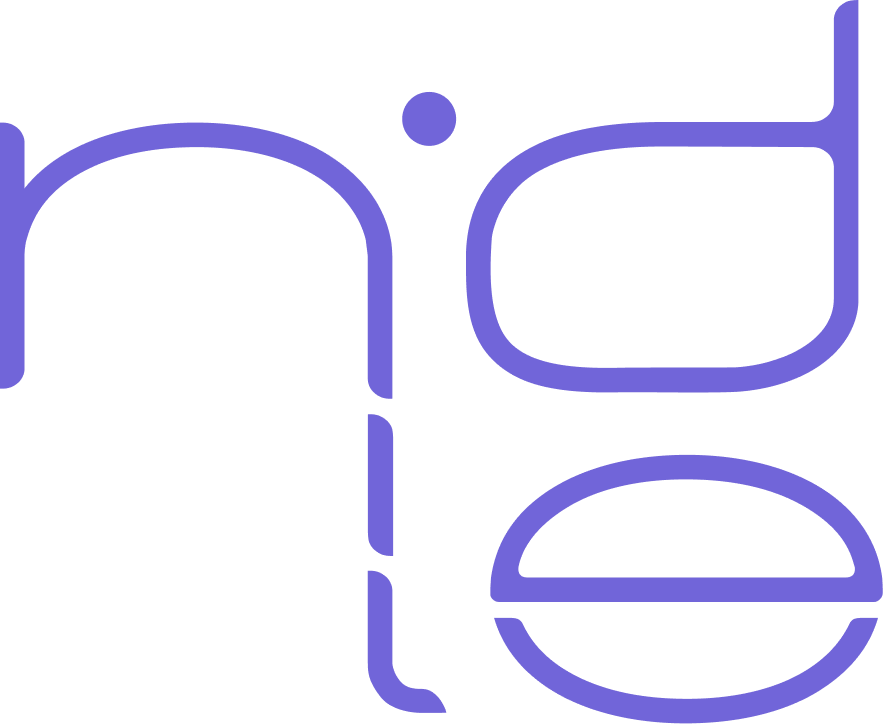
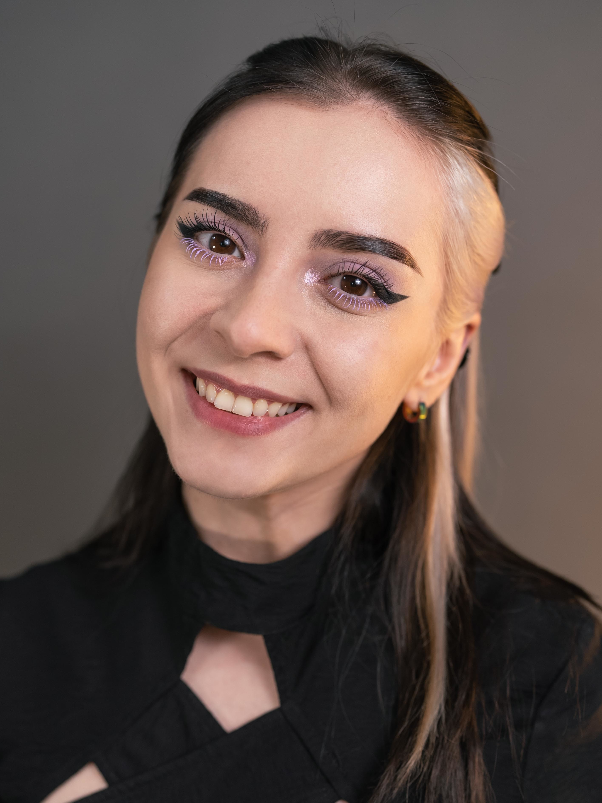

Nidle is a small business born out of a passion for knitting, crocheting, and a love for unique garments and accessories.
Nidle represents uniqueness, being based on timeless, chaotic and eclectic pieces. Everything you can possibly think of can be inspiration for clothing and style. The same algorithm can be applied to textures, varying from fine textiles to bulky rope, but also to colors, jumping from black-and-white to vibrant colors and back again.
With the help of Diana Ionescu, Nidle began to take shape, choosing the "slow and steady wins the race" attitude in opposition to fast fashion and the tons of material waste.
We are here to offer you a piece of our world, a piece of our time and effort, a piece of our love for the art of creation. We are here to offer you a piece of Nidle.
Want to talk about a collaboration? Click here!
Let's make the world a better place, normalise or simply randomise!
Do you not want a personalised experience? Log Out!
Ever since I can remember a thing or two, I've had an artistic, sometimes perhaps distorted vision of the things in everyday life. For me, the stiches that make clothes are just like the strokes of a paintbrush on a canvas, like words in a poem: ready to absorb you.
I don't see, neither create, only a piece of clothing or a mundane accessory. I want my pieces to represent time, effort and the love of every move of my tools and my hands.
"Buid to last" is my philosophy - as I work on a project, I become more and more attached to it, it almost becomes my child. Then, I offer my many hours of work in someone else's hands, to take care of them and love them as much as I do.

"Imagine user experiences informed by psychology and fueled by creativity. That's me! I leverage my deep understanding of cognitive psychology and diverse experiences in healthcare, PR, social media, marketing, and fashion to design solutions that just make sense. Naturally inquisitive and deeply empathetic, I connect with users on a human level, ensuring their needs are at the heart of every design."
Diana is more than just your average do-this-do-that. You can find a lot more of her work here!
I was six or seven years old when I sewed something for the first time. With a small needle and some thread, I created a rudimentary stone-age inspired garment out of scraps.
Two years later, I bought my first crochet hook and skein of yarn (which were going to be my first enemy in my path of learning how to handcraft clothes, because I bought them not knowing the sizing system of the materials I needed).
For a few years, I crocheted as a casual activity, not even dreaming about it becoming such an important part of my life. At the end of 2019 things changed, and I started to crochet more and more, also picked up knitting, and I put myself in this river of creation that keeps growing.
Until the moment I am writing this, I've finished over 50 projects (not including the ones I repeated or the ones I forgot to count), and had the chance to collaborate with a few Romanian artists.

My story surely does not stop here! I am currently working on a nature-inspired earrings collection, summer tops, and I'm already getting ready for the next winter with cozy sweaters, warm scarves and soft cardigans.
Can you hear the sound of music? My collaborations with artists have yet much to come, helping them find their physical visual identity and creating a part of their future wardrobe, especially stage and conceptual clothing.